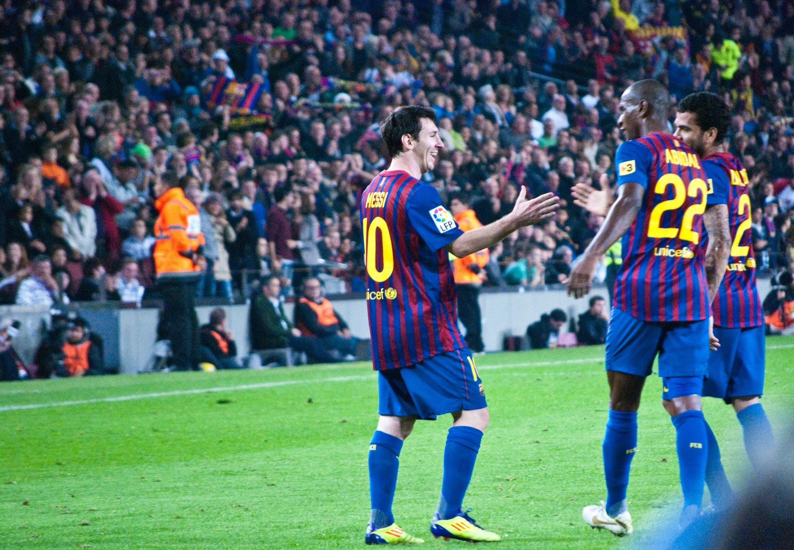
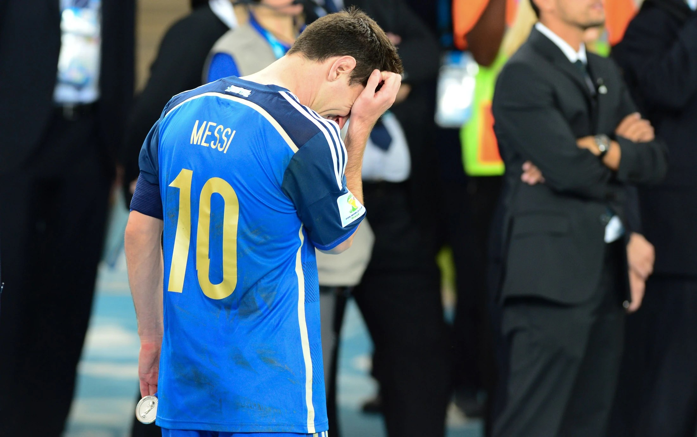
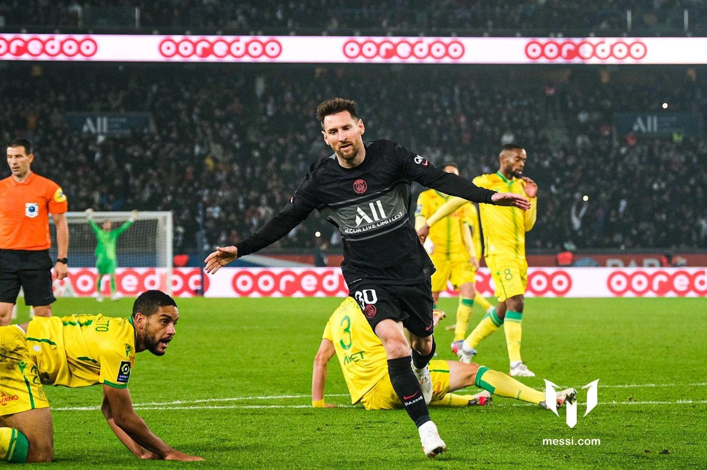
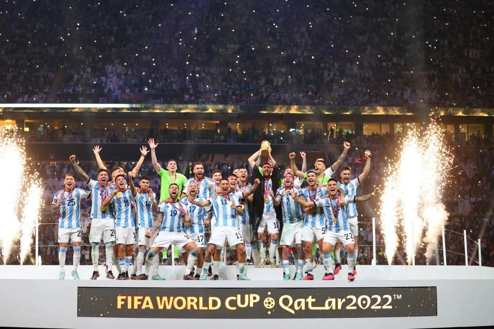
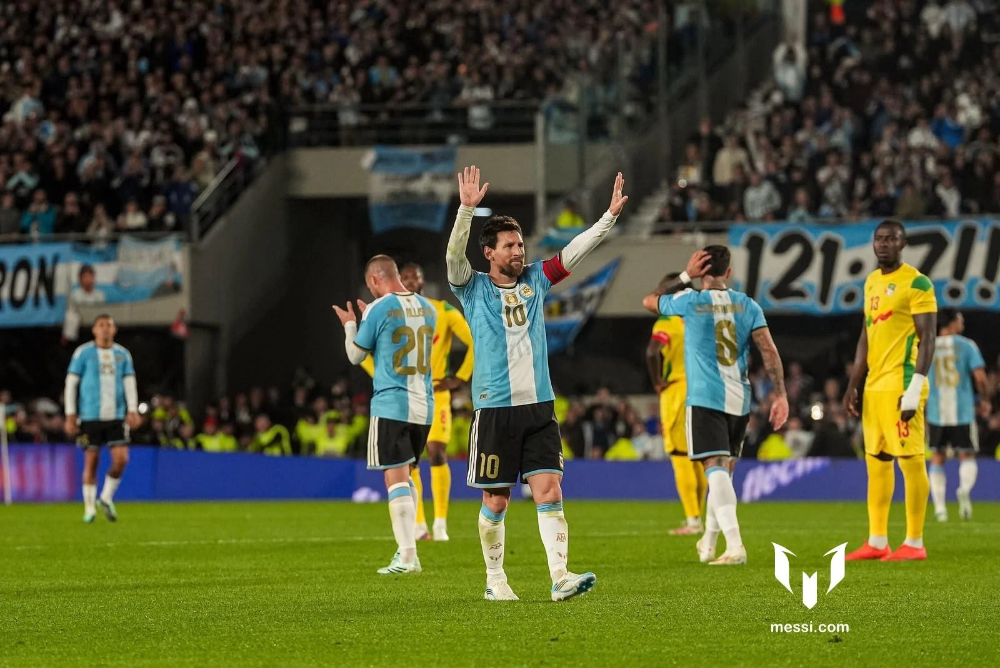

La casa. La storia.
Diciassette stagioni. Dal primo gol al Camp Nou a un’eredità che cambia il calcio d’attacco.
672Gol
269Assist
35Titoli
Barcelona · 2004–2021
UN ARCHIVIO PER IMMAGINI
Una carriera raccontata per capitoli: le squadre, i numeri e i momenti che hanno segnato il percorso.
Esplora la carrieraLionel Andrés Messi
Rosario, Argentina · 24 giugno 1987
01 · CAPITOLI
Scegli una maglia per vedere il periodo, i risultati e un’immagine di quella fase.

Diciassette stagioni. Dal primo gol al Camp Nou a un’eredità che cambia il calcio d’attacco.
Barcelona · 2004–2021
Ultima verifica automatica:
02 · STATISTICHE
Seleziona una squadra. I valori mostrano la fonte e la data dell’ultimo aggiornamento.
Archivio locale: ultimo dato disponibile.
Ultimo aggiornamento:
03 · PALMARÈS
Scorri le vittorie e apri una scheda per date e contesto.
Tocca una scheda per aprire il dettaglio dei titoli e delle stagioni.
18 DICEMBRE 2022 · LUSAIL
Due gol in finale, i rigori e il terzo titolo mondiale dell’Argentina. Una pagina che chiude un’attesa lunga generazioni.
Qatar 2022 · Il sogno diventato realtà.
Rivedi le storie04 · RECORD
Alcuni traguardi che attraversano stagioni e tornei.
Tra club e nazionale nell’arco di dodici mesi.
Il primato in una singola stagione del campionato spagnolo.
Il miglior marcatore nella storia della prima squadra.
Dal debutto del 2006 alla vittoria del 2022.
05 · CRONOLOGIA
Un percorso fatto di prime volte, addii e nuove partenze.
Una stagione dopo l’esordio in prima squadra, Messi segna la prima rete al Camp Nou.

La finale mondiale con la Germania si decide nei tempi supplementari.
L’Argentina vince la Copa América al Maracanã, il primo titolo maggiore con la nazionale maggiore.

Una nuova squadra e una fase inattesa dopo l’addio al Barcelona.

Due gol nella finale e la vittoria ai rigori contro la Francia.
La Leagues Cup diventa il primo trofeo della storia dell’Inter Miami.

Un gol e due assist accompagnano l’omaggio del Monumental alla maglia albiceleste.
06 · ARCHIVIO FOTOGRAFICO
Filtra per squadra o scorri l’intera raccolta. Tocca una foto per ingrandirla.
Ogni immagine mantiene fonte e attribuzione. I dettagli sono raccolti alla fine dell’archivio.
07 · FUORI DAL CAMPO
Una città, una famiglia e i primi campi da gioco: il percorso comincia lontano dai riflettori.
Con la nazionale · Pechino, 2023AGGIORNAMENTI
Notizie ufficiali e data dell’ultima verifica dei numeri.
L’omaggio del Monumental alla maglia albiceleste, nel resoconto ufficiale.
Leggi la fonte ufficiale ↗FONTI E TRASPARENZA
Ogni dato e ogni fotografia è collegata alla propria provenienza.
I dati sono raccolti dal sito ufficiale di Lionel Messi. Se non sono aggiornabili, resta visibile l’ultima lettura disponibile.
Apri messi.com ↗Questo archivio non è affiliato a Lionel Messi, ai club, alle federazioni o agli organizzatori delle competizioni.
Sito ufficiale ↗Edizione editoriale aggiornata il .